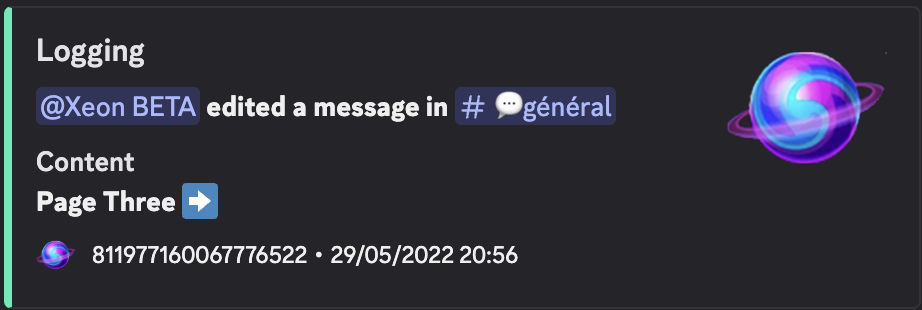

Qu'est-ce que Xeon ?
Xeon est un bot Discord développé en Python utilisant la bibliothèque py-cord. Il offre diverses fonctionnalités de modération et d'administration pour faciliter la gestion des serveurs Discord. Le bot permet aux administrateurs et modérateurs de gérer efficacement leur communauté avec des commandes simples et intuitives.
Fonctionnalités principales
- Commandes de modération - Gestion des avertissements, expulsions, et bannissements
- Gestion des rôles - Attribution et retrait automatique de rôles
- Système de logs - Enregistrement des actions importantes sur le serveur
- Commandes utilitaires - Diverses fonctionnalités pour améliorer l'expérience utilisateur
Exemple de fonctionnalité
Le système de logs de Xeon permet de suivre toutes les actions importantes sur le serveur, comme les modifications de messages, les suppressions, et les actions de modération. Voici un exemple de log généré lorsqu'un utilisateur modifie un message :

Capture d'écran du système de logs montrant une modification de message par le bot Xeon
Technologies utilisées
- Python - Langage de programmation principal
- py-cord - Bibliothèque pour interagir avec l'API Discord
- MongoDB - Base de données NoSQL pour stocker les données du bot
Voir le code source
-
Xeon
Bot Discord avec commandes de modération
Voir sur GitHub